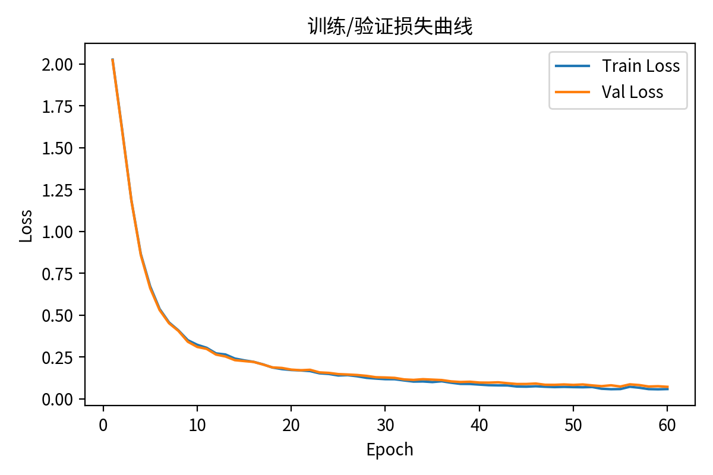
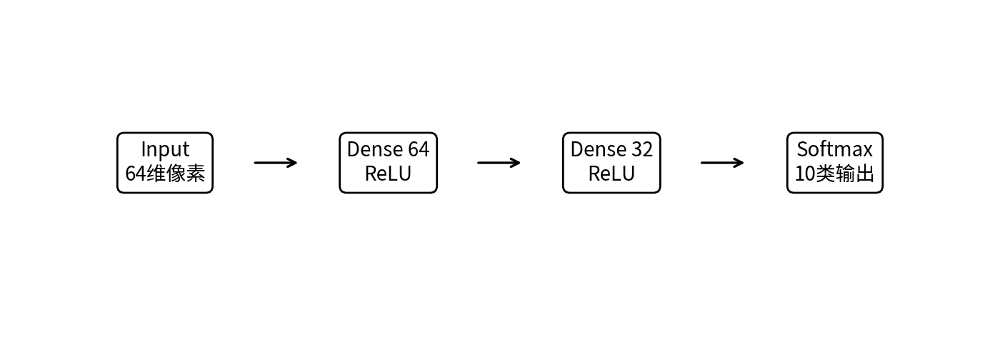
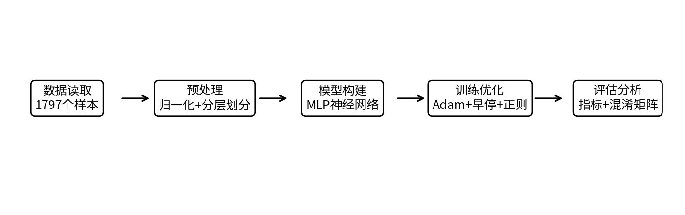
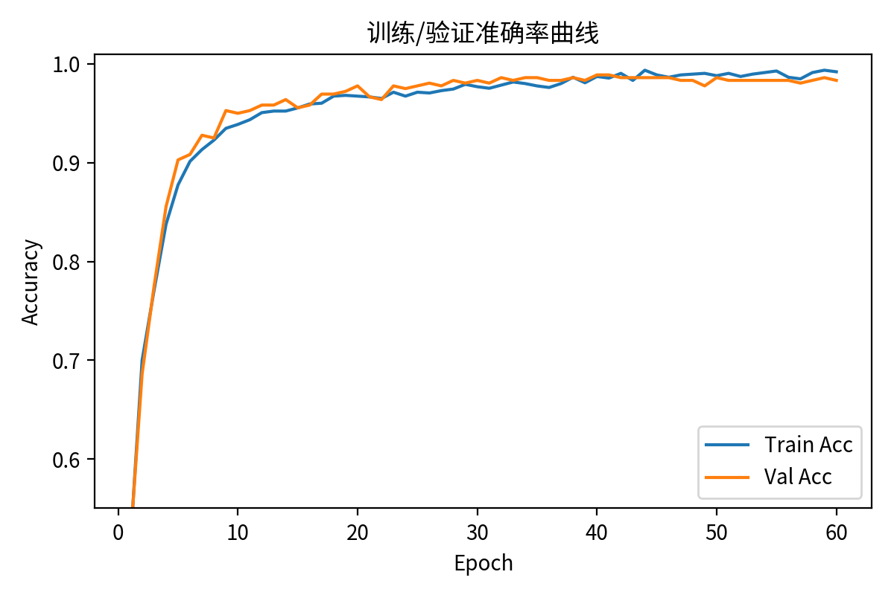
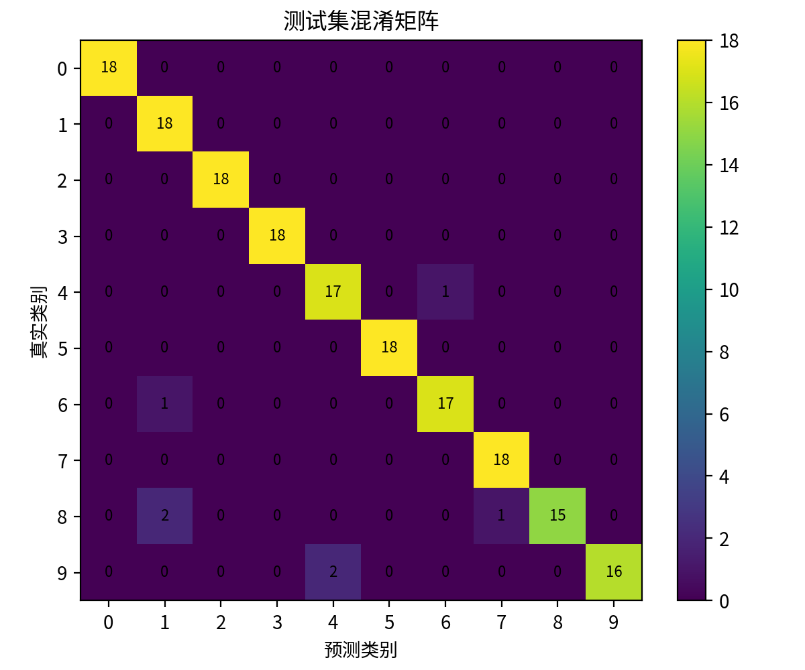

损失曲线
观察训练集与验证集 loss 是否同步下降，用于判断收敛与过拟合。
理工领域 AI 应用 · Web 交互 · 可部署提交
本网站围绕“手写数字识别”工程场景搭建，提供画板输入、图片上传、识别结果展示、模型性能说明、迭代记录和伦理反思，满足项目任务中“应用功能完整、界面合理、可公开访问”的网站要求。

轻量 MLP / CNN 可替换架构，适合教学与工程原型验证。
01 · 在线体验
在画板中写一个 0–9 的数字，或上传一张数字图片。当前版本为第 16 轮9号保护版：先把输入归一化为 28×28 灰度图，再由轻量 MLP、增强模板匹配和用户反馈定向校正层共同投票，重点修正 9→7、7→9、6→5/4，同时保留 3/5/6/8/0 等前几轮校正；正式提交时也可将 predict() 替换为后端 PyTorch/ONNX CNN 模型接口。
建议使用鼠标或触控笔，居中写一个较粗的黑色数字。
02 · 技术路线
项目采用 MNIST/手写数字类数据集，完成灰度化、归一化、训练/验证/测试集划分，再使用神经网络完成分类。训练阶段监控损失与准确率，测试阶段输出混淆矩阵并分析易错类别。

03 · 项目结果

观察训练集与验证集 loss 是否同步下降，用于判断收敛与过拟合。

展示模型随 epoch 的分类能力提升情况。

分析 0–9 各类别的误判模式，为后续优化提供依据。
04 · Coze / Prompt 设计
输入当前模型问题，生成可复制到 Coze Bot 的诊断提示词，用于满足项目中“目标、界面、规则、交互”四要素的提示词设计要求。
05 · AI 伦理与社会责任
优先使用公开数据集，不采集身份证号、手机号等敏感信息；上传图片仅在本地浏览器处理。
对模糊笔迹、遮挡、低分辨率图片给出低置信度提示，避免将模型结果作为唯一决策依据。
在不同书写风格、笔画粗细和扫描质量上测试，减少对某类书写习惯的偏差。